- 00 开篇词 帮你从0到1深入学习区块链技术.md.html
- 尾声篇 授人以鱼，不如授人以渔.md.html
- 新书首发《区块链第一课：深入浅出技术与应用》.md.html
- 第01讲 到底什么才是区块链？.md.html
- 第02讲 区块链到底是怎么运行的？.md.html
- 第03讲 浅说区块链共识机制.md.html
- 第04讲 区块链的应用类型.md.html
- 第05讲 如何理解数字货币？它与区块链又是什么样的关系？.md.html
- 第06讲 理解区块链之前，先上手体验一把数字货币.md.html
- 第07讲 区块链的常见误区.md.html
- 第08讲 最主流区块链项目有哪些？.md.html
- 第09讲 深入区块链技术（一）：技术基础.md.html
- 第10讲 深入区块链技术（二）：P2P网络.md.html
- 第11讲 深入区块链技术（三）：共识算法与分布式一致性算法.md.html
- 第12讲 深入区块链技术（四）：PoW共识.md.html
- 第13讲 深入区块链技术（五）：PoS共识机制.md.html
- 第14讲 深入区块链技术（六）：DPoS共识机制.md.html
- 第15讲 深入区块链技术（七）：哈希与加密算法.md.html
- 第16讲 深入区块链技术（八）： UTXO与普通账户模型.md.html
- 第17讲 去中心化与区块链交易性能.md.html
- 第18讲 智能合约与以太坊.md.html
- 第19讲 上手搭建一条自己的智能合约.md.html
- 第20讲 区块链项目详解：比特股BTS.md.html
- 第21讲 引人瞩目的区块链项目：EOS、IOTA、Cardano.md.html
- 第22讲 国内区块链项目技术一览.md.html
- 第23讲 联盟链和它的困境.md.html
- 第24讲 比特币专题（一）历史与货币.md.html
- 第25讲 比特币专题（二）：扩容之争、IFO与链上治理.md.html
- 第26讲 数字货币和数字资产.md.html
- 第27讲 弄懂数字货币交易平台（一）.md.html
- 第28讲 弄懂数字货币交易平台（二）.md.html
- 第29讲 互联网身份与区块链数字身份.md.html
- 第30讲 区块链即服务BaaS.md.html
- 第31讲 数字货币钱包服务.md.html
- 第32讲 区块链与供应链（一）.md.html
- 第33讲 区块链与供应链（二）.md.html
- 第34讲 从业区块链需要了解什么？.md.html
- 第35讲 搭建你的迷你区块链（设计篇 ）.md.html
- 第36讲 搭建你的迷你区块链（实践篇）.md.html
- 捐赠
第19讲 上手搭建一条自己的智能合约
上一篇我们聊到了区块链智能合约，我主要介绍了智能合约的概念，但是并没有给你提供智能合约的实际运行案例，那么今天，我们就自己动手写一个智能合约，并且介绍一下智能合约标准模板，供你参考学习， 并搭建起自己的智能合约。
本篇将以以太坊作为基础知识进行讲解，本篇面向没有任何智能合约基础的人群，所以配备了较多的插图和操作命令，如果你正在收听音频，可以点击文稿查看，希望读完这篇文章可以帮助你快速入门智能合约。
搭建一条智能合约
在实际操作智能合约之前，我们首先回顾一下以太坊，以太坊又称以太坊钱包。以太坊钱包提供了包括账户管理，以太坊转账、Dapp部署与使用在内的一些常规功能。
以太坊社区提供了多种语言实现的客户端和开发库，多数客户端支持JSON-RPC2.0标准，目前支持的客户版本有Go-ethereum（Go语言）、Parity（Rust语言）、Cpp-ethereum（C++语言）、Ethereum-lib（Javascript)、EthererumJ(Java语言)、Pyethapp（Python语言)，基本涵盖了主流编程语言。
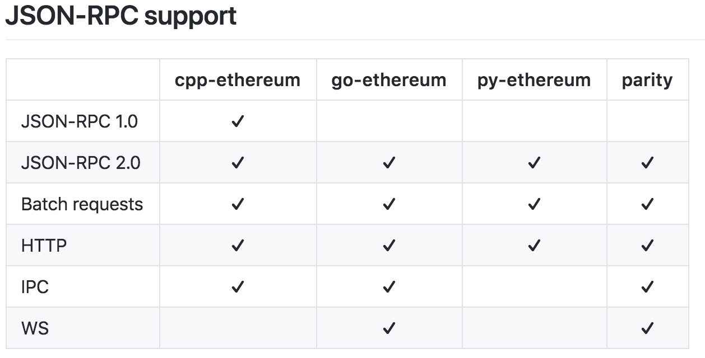
图片来自以太坊官方文档
官方推荐使用的版本是Go-ethererum，这是Go语言实现的版本，又称Geth客户端。
需要提醒你的是，这里客户端的实现语言并不是要求用户熟悉相应的编程语言，这里的用户是指Dapp开发者，比如在操作Geth客户端的时候，用户其实并不需要了解Go语言。
1.下载与安装Geth
本文使用Geth来进行测试，首先我们要获取Geth客户端，如果用户使用的是Ubuntu环境的话，可以直接从PPA安装。
# apt-get install software-properties-common
# add-apt-repository -y ppa:ethereum/ethereum
# apt-get update
# apt-get install ethereum
安装成功后，我们可以查看Geth的版本。
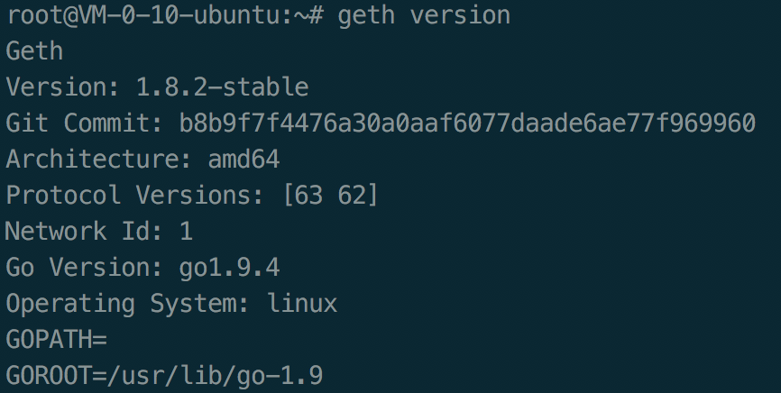
表示我们已经安装成功，当然你可以也可以编译安装，由于篇幅有限，你可以另寻资料进行尝试。
2.搭建以太坊私链
如果在以太坊的主网上运行和开发测试智能合约，这是不明智的，因为会消耗真实的以太币，不过我们可以使用Geth搭建一条属于自己的以太坊区块链，也就是以太坊私链。
怎么搭建呢？其实很简单，只需要修改配置文件和一些运行参数即可。
{
"config": {
"chainId": 98,
"homesteadBlock": 0,
"eip155Block": 0,
"eip158Block": 0
},
"difficulty": "200000000",
"gasLimit": "2100000",
"alloc": {
"7df9a875a174b3bc565e6424a0050ebc1b2d1d82": { "balance": "300000" },
"f41c74c9ae680c1aa78f42e5647a62f353b7bdde": { "balance": "400000" }
}
}
然后执行：
$ geth --datadir /root/geth-test/ init genesis.json
这样，我们就初始化了属于自己的创世区块信息。
接下来我们创建一个账户，由于是用户私链挖矿，只有你一个人挖矿，所以使用CPU挖矿完全没有问题。
我们通过如下命令进入Geth命令行交互页面：
$ geth --datadir /root/geth-test/ --networkid 98 console
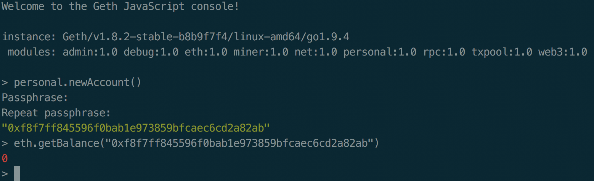
如上图所示的那样，运行通过。
personal.newAccount()
我们创建了一个新账户，这个账户就是EOA账户，并通过eth.getBalance获取了当前地址的余额，显示为0。
输入Exit退出后，我们开始以挖矿模式启动，这里我们最好记录一下我们的地址：
【0xf8f7ff845596f0bab1e973859bfcaec6cd2a82ab】
我们使用如下命令启动挖矿，注意在Etherbase的地方填上述地址：
$ geth --datadir /root/geth-test/ --networkid 98 --mine --minerthreads=1 --etherbase=0xf8f7ff845596f0bab1e973859bfcaec6cd2a82ab
以太坊的PoW挖矿算法是内存困难型的，首先需要生成DAG，这个视你设备的性能而定，需要耗费一定时间，请耐心等待，如下图所示，我们可以看到DAG生成非常耗费时间。
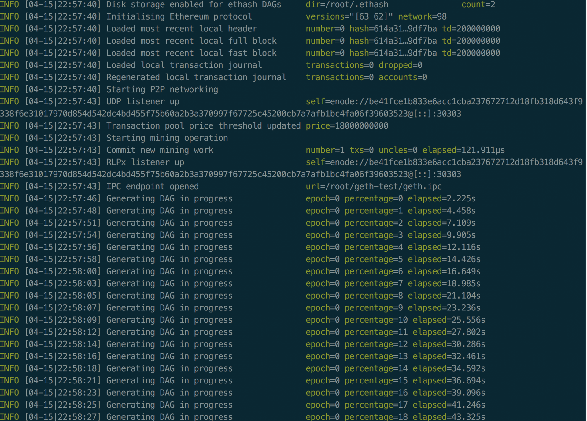
在我的远程开发机上一共耗费了6分半，又经过了4分钟，我挖到了第一个块，如下图所示。

这期间机器的负载如下。
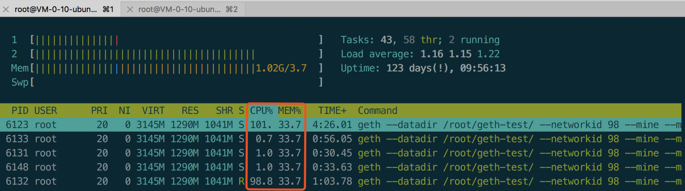
可以看到CPU和内存占用很高，我这里使用测试的机器是2Core 4GB Ubuntu16.04。
现在我们再去检查一下Etherbase所指向地址的余额。
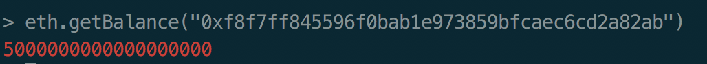
可以看到已经有5个以太币了，以太币的最小单位wei，所以5后面18个零表示5个以太币。
3.编写并部署属于自己的智能合约
智能合约的开发与钱包是独立的，用户可以使用IDE进行调试等操作，目前Dapp的IDE并不多，常见有Truffle、Embark、Remix几种；
这篇文章中，我并不使用IDE，这里仅仅会给出一些示例代码，即经典的Hello Word，你如果想尝试编写自己的智能合约，可以使用在线IDE。
首先我们要获取Solidity编译器，通过 apt-get install solc 来安装。
安装成功后，我们新建一个Solidity源码文件，命名为helloword.sol，并且写入代码如下。
pragma solidity ^0.4.11;
contract helloWorld {
function renderHelloWorld () returns (string) {
return 'helloWorld';
}
}
执行 solc –bin helloword.sol 获得EVM二进制码。
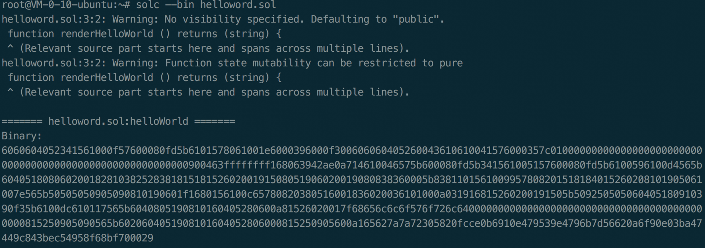
编译器警告我们暂时不必理会，接下来我们还需要生成ABI部署参数，使用命令 solc –abi helloword.sol。
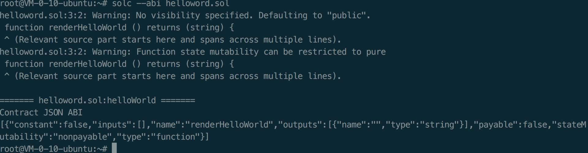
开始部署，我们进入console，
定义code和abi两个变量如下，注意code的值最前面有0x，二进制数据是用十六进制表示的。
>code="0x6060604052341561000f57600080fd5b6101578061001e6000396000f300606060405260043610610041576000357c0100000000000000000000000000000000000000000000000000000000900463ffffffff168063942ae0a714610046575b600080fd5b341561005157600080fd5b6100596100d4565b6040518080602001828103825283818151815260200191508051906020019080838360005b8381101561009957808201518184015260208101905061007e565b50505050905090810190601f1680156100c65780820380516001836020036101000a031916815260200191505b509250505060405180910390f35b6100dc610117565b6040805190810160405280600a81526020017f68656c6c6f576f726c6400000000000000000000000000000000000000000000815250905090565b6020604051908101604052806000815250905600a165627a7a72305820fcce0b6910e479539e4796b7d56620a6f90e03ba47449c843bec54958f68bf700029"
>abi=[{"constant":false,"inputs":[],"name":"renderHelloWorld","outputs":[{"name":"","type":"string"}],"payable":false,"stateMutability":"nonpayable","type":"function"}]
你可以在控制台分别执行，由于结果比较长，这里就不放出来了。
// 这一步解锁账户，用于方便部署合约
>personal.unlockAccount("0xf8f7ff845596f0bab1e973859bfcaec6cd2a82ab")
// 使用上述定义的abi变量生成合约信息
>myHelloWorld=eth.contract(abi)
// 注入code信息，激活合约
>contract=myHelloWorld.new({from:"0xf8f7ff845596f0bab1e973859bfcaec6cd2a82ab",data:code,gas:1000000})
最终执行结果如下。
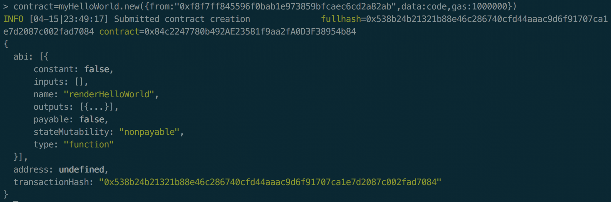
我们可以通过txpool来查看未确认的交易。
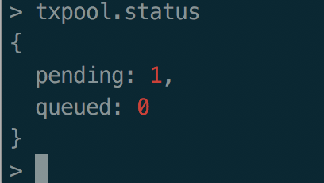
接下来只要等待出块即可，你的合约就会成为正常运行的合约了，否则合约还不可以调用。
由于我本地挖矿出块异常缓慢，所以我尝试了Remix IDE，运行后我们可以得到如下结果。
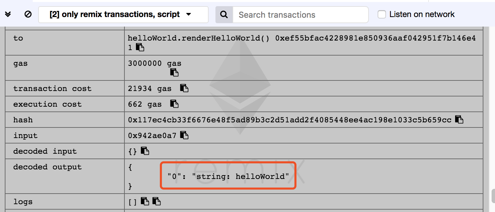
至此一个简单的HelloWord智能合约就生成啦，不过它的运行成本非常高昂，所以我们极力建议使用在一些方便的虚拟环境中。
智能合约标准模板
当任何人都可以写代码自定义业务逻辑的时候，也就意味着需要一套标准让人们降低开发门槛，标准化的接口让产品之间可以协作。那么我们接下来就来讨论一下以太坊上的三种智能合约标准模板。
这三种模板都与Token有关。那么首先我们就来区分一下数字货币与Token的概念，数字货币一般指一个区块链项目的平台代币，比如以太坊上的以太币，元界上的ETP都是基础代币。
而Token往往代表了一种资产，这些资产在已经存在的其他区块链之上运行，资产还可以像商品一样交易，例如消费积分、游戏虚拟资产。Token离具体的区块链应用也会更近，因为区块链应用的项目方通常也是Token的发行方。
目前最广泛使用的三种Token标准都是基于以太坊的，它们分别是ERC20、ERC223、ERC721。这里的ERC表示Ethereum Request for Comments，翻译过来就是以太坊意见征求稿。
1.ERC20
2015年11月，V神在Github上提交了ERC20代币的技术标准，随后2016年到2017年，大量的区块链项目都使用ERC20作为工具进行ICO。这使得ERC20成为了区块链整个行业内的Token标准，可见这种标准的影响之大。
实际上ERC20代币是一类运行在以太坊区块链上的智能合约，只不过这些合约代码遵循一定的规范，这个规范就是ERC20标准，它规定了跨Dapp转移Token、Token交易以及一些使用接口。
ERC20一共定义了6个函数和两个触发事件，他们都是使用Solidity语言编写的。
6个函数描述了如何转移以及Token的相关数据如何被访问，市面上99%的ERC20 Token都可以找到这6个函数。2个事件提供了Approve和Transfer的格式化输出。
下面我们重点看一看ERC20的接口。
// ---------------------------------------------
// ERC Token Standard #20 Interface
// https://github.com/ethereum/EIPs/blob/master/EIPS/eip-20-token-standard.md.html
// -------------------------------------------
contract ERC20Interface {
function totalSupply() public constant returns (uint);
function balanceOf(address tokenOwner) public constant returns (uint balance);
function allowance(address tokenOwner, address spender) public constant returns (uint remaining);
function transfer(address to, uint tokens) public returns (bool success);
function approve(address spender, uint tokens) public returns (bool success);
function transferFrom(address from, address to, uint tokens) public returns (bool success);
event Transfer(address indexed from, address indexed to, uint tokens);
event Approval(address indexed tokenOwner, address indexed spender, uint tokens);
}
- Allowance：允许多次创建两个不同的地址之间的单向交易，Token的拥有者可以从此智能合约中提取Token；
- Approve：这个函数需要引用Allowance，顾名思义，它定义了Token的拥有者同意创建属于自己的交易，这个函数要求两个参数作为输入，分别是花费者的地址，以及发送金额；
- BalanceOf：定义了查询目标地址账户余额的接口；
- Transfer和TransferFrom：定义了Token如何转移以及执行转移过程；
- TotalSupply：定义了这个Token最大发行量。
上面我们简要介绍了ERC20标准合约的接口，下面我们来看看升级版的ERC20。
2.ERC223
在某些情况下，ERC20也有些缺陷。例如某人使用ERC20发送100个Token到另外一个账户，如果目标账户是一个合约账户，目标账户的合约代码如果不兼容ERC20 标准怎么办呢？
这一点非常有可能，由于合约代码无法识别交易，所以这笔交易就会被拒绝。
我们知道以太坊使用的并不是UTXO，这意味着合约之间不满足ACID，那么很遗憾，发送方的这100个Token就永久地丢失了。
为了解决这个问题，非官方的社区开发者提交了ERC223模板，可以解决这个问题，使用者需要把既存的ERC20合约升级到ERC223合约。
3.ERC721
2018年初，有一个区块链游戏火了，叫做以太坊养猫游戏，这个游戏也是一个智能合约。它基于ERC721标准，实际上它也是一种Token标准。
ERC721与ERC20最大的区别是：ERC721定义了每一份Token都是唯一的，它们有唯一的标识。例如芒果和米饭是两种不同属性的资产，从物理世界来看，他们是不能直接混在一起使用的，我们不能把芒果加到大米中。
这样一来，ERC721中Token的含义也转变成了一种物权所有权凭证，不再是ERC20中的同质资产。
总结
今天我们介绍了以太坊钱包，手把手教你搭建了一条以太坊私链，并告诉你如何编译和部署智能合约，最后我还介绍了三种流行的智能合约模板，希望能帮助你上手并能深入地理解智能合约。
今天的问题是，除了以太坊之外，还有哪些主打智能合约的区块链项目呢？你可以给我留言，我们一起讨论。感谢你的收听，我们下次再见。
参考链接：
© 2019 - 2023 Liangliang Lee. Powered by gin and hexo-theme-book.